Tokens, embeddings, attention, MLPs, MoE, sampling
Pre-training costs, curricula, SFT, RLHF, RLVR
Inference, KV cache, system prompts, serving
Missing context, persona, the void
Tokens, Embeddings, Attention, MLPs, MoE & Unembedding
Elhage et al., “A Mathematical Framework for Transformer Circuits,” 2021
| Tokenizer | Vocab | Used by |
|---|---|---|
| r50k_base | 50,257 | GPT-2, GPT-3 |
| cl100k_base | 100,256 | GPT-4, GPT-3.5 |
| o200k_base | 199,998 | GPT-4o |
| Llama 2 | 32,000 | Llama 2 |
| Llama 3 | 128,256 | Llama 3/3.1 |
| Gemma 2 | 256,128 | Gemma 2 |
Sennrich et al., “Neural Machine Translation of Rare Words with Subword Units,” ACL 2016
After tokenization, the model operates on sequences of integer IDs:
“How many r’s in strawberry?” — LLMs consistently answer 2 (correct: 3).
The model sees [496, 675, 15717] (“str”, “aw”, “berry”), never individual characters.
Generalizes to all character-level tasks: counting letters, anagrams, spelling backwards, detecting double letters.
BPE shards numbers inconsistently: 12345 may tokenize as [1234][5] or [12][345]. The model sees a jumble of multi-digit fragments rather than a single numeric quantity.
BPE is biased toward the tokenizer-training corpus. Low-resource languages are compressed less efficiently, e.g. 5–10× more tokens per word in Thai than in English.
Every token ID i is mapped to a row of a learned matrix:
$V$ is the vocabulary size (e.g. 128K for Llama 3), $d$ is the hidden dim (e.g. 4096 for Llama 3 8B).
The embedding table is simply a lookup: the only place the integer index matters.
The vocabulary is built from tokenizer-training data. The embedding matrix $E$ is trained on the (different) model-training data.
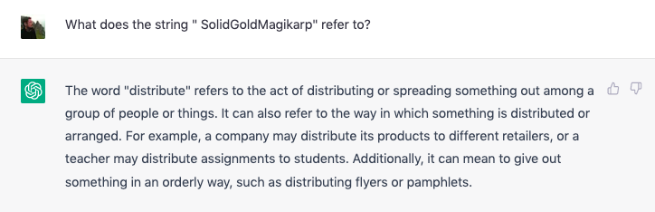
For one head, per token position: $Q,K \in \mathbb{R}^{T\times d_k}$, $V \in \mathbb{R}^{T\times d_v}$, where $T$ is the sequence length and $d_k = d_\text{model}/h$ splits the hidden dimension across $h$ heads.
$QK^\top \in \mathbb{R}^{T\times T}$: a token×token similarity matrix.
Multi-head: $h$ parallel heads, each learning a different mixing pattern across positions.
Causal mask: each position only attends to earlier positions.
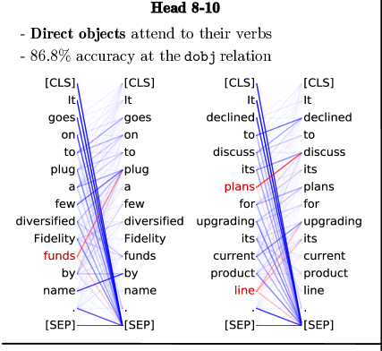
Head 8-10 — attends from verbs to their direct objects.
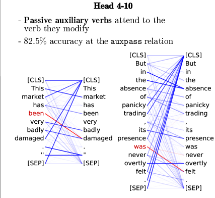
Head 4-10 — attends to passive auxiliaries.
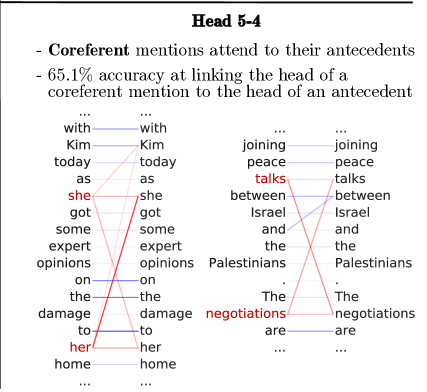
Head 5-4 — attends from pronouns to their antecedents.
SwiGLU (Llama, DeepSeek, Qwen):
Three weight matrices: gate ($W_1$), up ($W_3$), down ($W_2$).
Operates independently at each position, no mixing between tokens.
Intermediate dim typically $\frac{8}{3}d$ or larger, where most parameters live.
MLP at one position: expand to a wide intermediate space, gate, project back.
Replace each dense MLP with $N$ expert MLPs + a learned router.
Router: $\text{TopK}(\text{softmax}(W_r \cdot x))$ picks which $k$ experts process each token. Only $k$ fire → total params >> active params.
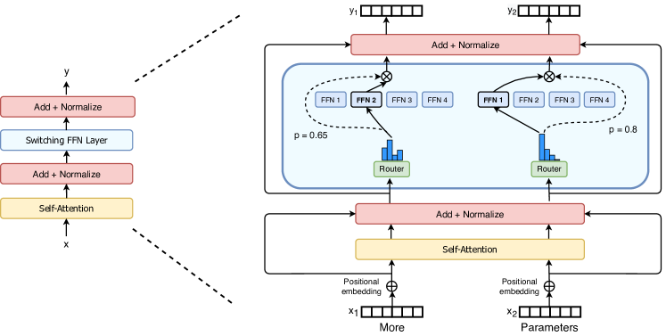
| Model | Experts | Top-k | Total | Active |
|---|---|---|---|---|
| DeepSeek-V3 | 256+1 | 8 | 671B | 37B |
| Qwen3-235B | 128 | 8 | 235B | 22B |
| Mixtral 8x22B | 8 | 2 | 141B | 39B |
| Llama 4 Maverick | 128 | 1 | 400B | 17B |
MoE decouples capacity (total params) from compute per token (active params). A 671B-param model running at 37B-param cost.
Residual stream (vertical): state vector persists across layers at each token position.
Attention (horizontal): information flows between positions at each layer via K/V projections.
Each layer adds to the stream. Additive structure → representations are approximately linear in the residual stream.
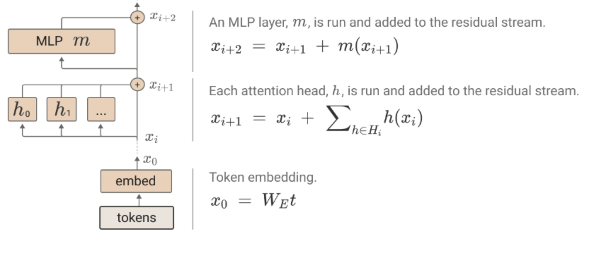
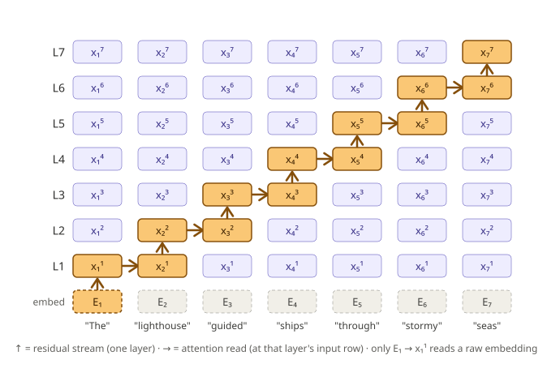
Elhage et al., “A Mathematical Framework for Transformer Circuits,” 2021
Train a linear classifier on activations at layer $l$ to detect hidden properties:
→ Mini-Project 1 · Lecture 5
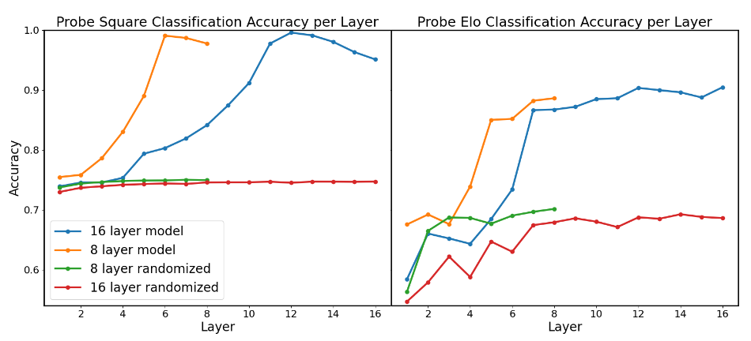
Linear probes on a transformer trained only on raw PGN move text recover the board state (left) and player Elo (right). Randomly-initialized baselines stay flat.
| Model | Total Params | Active | Layers | Attn % | MLP/Expert % | Type |
|---|---|---|---|---|---|---|
| Qwen3-0.6B | 0.60B | 0.60B | 28 | 29.6% | 44.3% | Dense |
| Llama 3.1 8B | 8.03B | 8.03B | 32 | 16.7% | 70.2% | Dense |
| Llama 3.1 70B | 70.6B | 70.6B | 80 | 17.1% | 79.9% | Dense |
| Llama 3.1 405B | 405.9B | 405.9B | 126 | 17.7% | 81.3% | Dense |
| Mixtral 8x22B | 141B | 39.2B | 56 | 3.5% | 96.2% | MoE |
| Qwen3-235B | 235B | 22.2B | 94 | 2.9% | 96.6% | MoE |
| DeepSeek-V3 | 671B | 37.6B | 61 | 1.7% | 98.0% | MoE |
| Kimi K2 | 1,000B | 32.6B | 61 | ~2% | ~98% | MoE |
All models use head_dim = 128. DeepSeek-V3 activates only 5.6% of its total parameters per token; Kimi K2 activates only 3.3%.
Linear projection from hidden state to vocabulary-sized logits, then softmax over all tokens. Often $W_U = W_E^\top$ (tied weights).
At every step, the model produces a full distribution $p$. Sampling selects which token to emit.
| Strategy | Method |
|---|---|
| Greedy | Pick $\arg\max_i p_i$ |
| Temperature | Scale logits by $1/T$ before softmax |
| Top-k | Keep the $k$ most probable tokens |
| Top-p (nucleus) | Keep smallest set with cumulative $\sum p \geq p_{\text{top}}$ |
| Min-p | Keep $p_i \geq p_{\text{base}} \cdot \max_j p_j$ (after temperature; $p_{\text{base}}$ ~ 0.05–0.1) |
Sampling parameters alone can flip a model from safe to unsafe:
| Finding | Source |
|---|---|
| Misalignment rate 0% → 95%+ by varying only decoding params; 30× cheaper than GCG. | Huang et al., ICLR 2024 |
| 18–28% of prompts flip safety decisions across temperature settings. | Liusie et al., 2024 |
Interactive Sampling Demo
Pre-training, Costs, Curricula, SFT & Reinforcement Learning
The cat sat on the [mat] p=0.23
def fibonacci(n): [return] p=0.31
E = mc [2] p=0.89
| Model | Tokens | Sources |
|---|---|---|
| Llama 3.1 | 15T | Web, code, math |
| Qwen3 | 36T | Web, code, math, 119 languages |
| DeepSeek-V3 | 14.8T | Web, code, math |
$C$ = FLOPs, $N$ = parameters, $D$ = tokens.
The 6 is three matmul passes, each costing 2 FLOPs/param/token:
For MoE: use active params, not total.
| Model | FLOPs | GPU-hours | Est. Cost |
|---|---|---|---|
| Llama 3.1 8B | ~1.8×1024 | 1.46M H100 | ~$3M |
| Llama 3.1 405B | 3.8×1025 | 30.8M H100 | $60–170M |
| DeepSeek-V3 | ~3.3×1024 | 2.79M H800 | $5.6M* |
| GPT-4 | ~2.1×1025 | 25K A100×90d | $63–78M |
| Grok-4 | ~5×1026 | 246M H100 | ~$490M |
*DeepSeek-V3: final training run cost only. Sources: Meta, DeepSeek, Epoch AI, Stanford AI Index 2025.
MFU = Model FLOP Utilization: fraction of the GPU’s peak FLOP/s actually realized. 40% is typical for well-tuned dense training; MoE routing and small batches push it lower.
| Component | Bytes/param |
|---|---|
| Weights (FP32) | 4 |
| Gradients (FP32) | 4 |
| Adam 1st moment $m$ (FP32) | 4 |
| Adam 2nd moment $v$ (FP32) | 4 |
| Total | 16 |
Rajbhandari et al., “ZeRO,” SC 2020 — table-style “model-state” accounting for Adam.
70B params × 16 bytes = 1.12 TB
One H100 has 80 GB → need ≥14 GPUs just for the model state.
405B params × 16 bytes = 6.48 TB → ≥81 GPUs.
Activation memory (the forward pass, checkpointed or not) is on top of this and scales with batch and sequence length.
Shard each layer’s matrices across GPUs within a node.
“Every GPU computes part of every layer”
Assign different layers to different GPUs across nodes.
“Each GPU computes a few full layers”
Replicate the model, split data batches across replicas, all-reduce gradients.
“Many copies see different data”
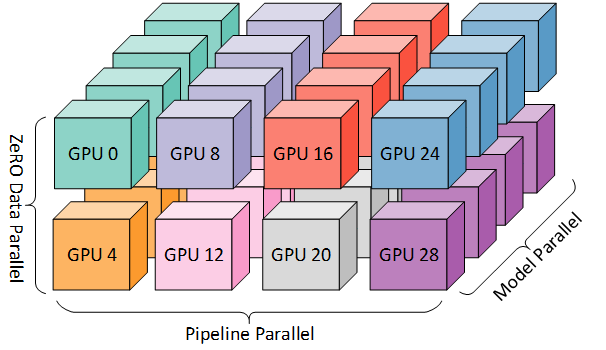
Typical hierarchy: TP within node (8 GPUs) → PP across ~16 nodes → DP across the rest of the cluster.
One H100 GPU draws ~700 W at full load. A 100K-GPU cluster alone needs ~70 MW of power.
| Bottleneck | Power |
|---|---|
| 1 × H100 | ~700 W |
| 1 × DGX H100 node (8 GPUs) | ~10 kW |
| 100K H100 cluster | ~70 MW |
| Typical German household | ~0.5 kW avg |
| Frontier 2026 site (xAI Colossus 2) | ~1 GW |
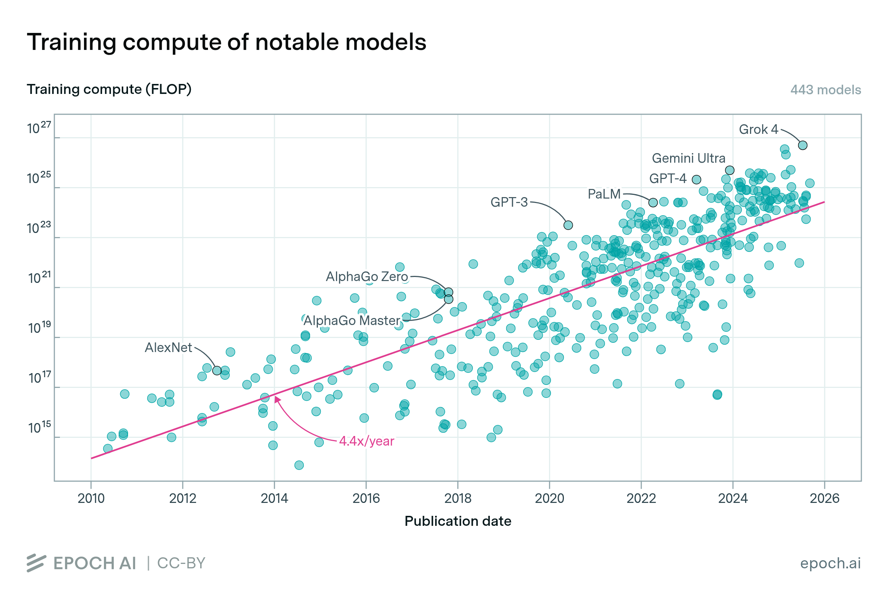
Training is a sequence of stages.
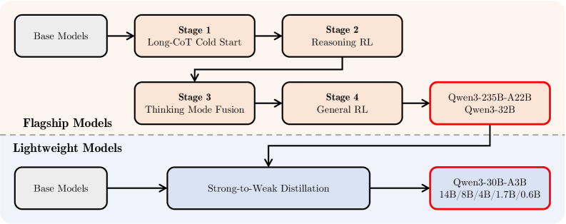
Template markers like <|start_header_id|> (ID 128006) and <|eot_id|> (ID 128009) are single tokens added to the vocabulary. The model learns their role only during SFT.
Every role marker is a single token in the vocabulary. The model learned to treat “system” and “user” differently through SFT alone.
Geiping et al., “Coercing LLMs to Do and Reveal (Almost) Anything,” 2024
Instruction-shaped fragments plus pseudo-format tokens slip through the refusal prefix.
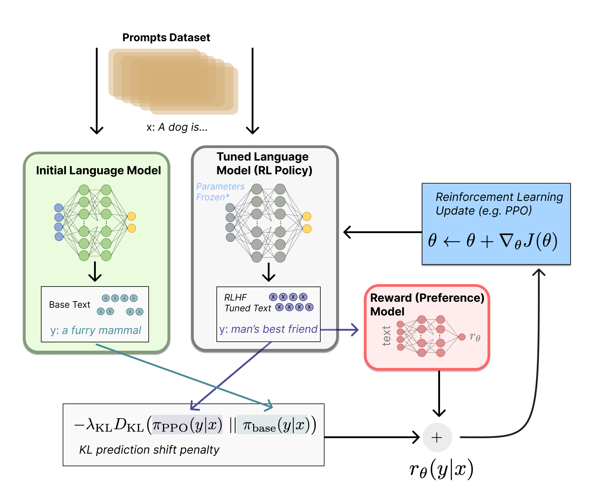
Human preferences enter only through the reward model.
Replace human preferences with programmatic verification: math answers, passing unit tests, format checks.
GRPO: sample a group of $G$ responses, score each with the verifier, use the group-relative z-score as advantage. No learned reward model.
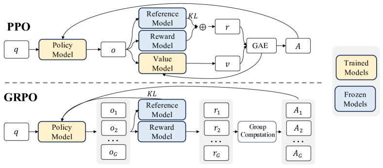
Trained with RLVR only. Emergent behaviors: spontaneous chain-of-thought, self-verification (“wait, let me check…”), the “aha moment.”
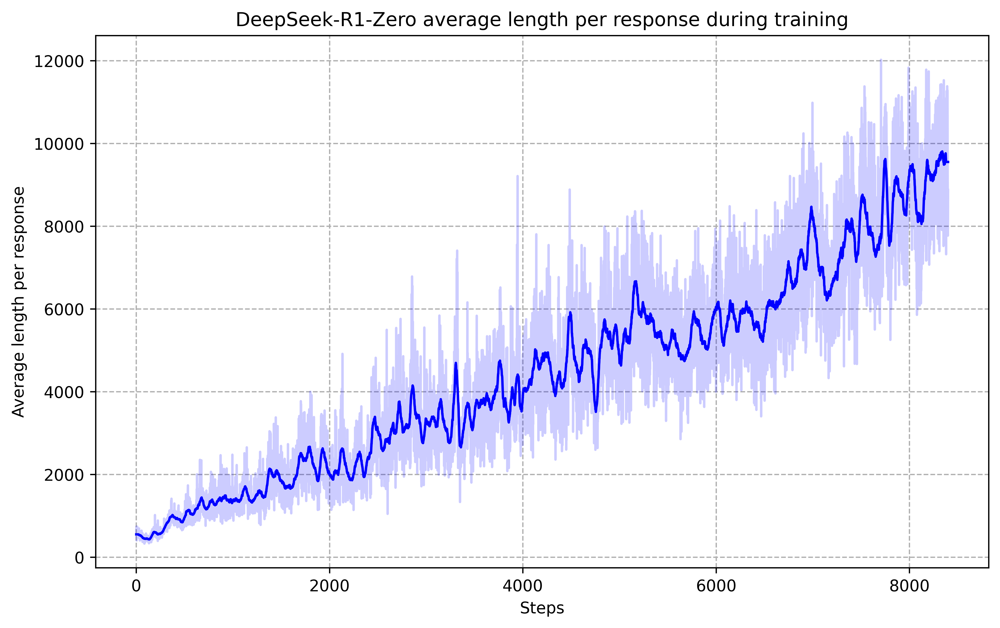
The model learns to “think longer” without being told to.
All safety lives in this post-training pipeline. The base model has no guardrails.
| Paper | Finding |
|---|---|
| Qi et al., ICLR 2024 | 10 fine-tuning examples ($0.20) remove safety from GPT-3.5-Turbo |
| Arditi et al., NeurIPS 2024 | Refusal is mediated by a single direction in the residual stream. Erasing it (“abliteration”) completely disables safety. |
| Safety Layers, 2024 | Safety-critical neurons are <1% of params, concentrated in layers 10–15 |
| Lermen et al., 2023 | LoRA removes Llama 2 70B safety for <$200 |
| Qi et al., 2024 | Safety alignment only modifies the first few output tokens (the refusal prefix) |
HuggingFace, “SmolLM3: Open-Source Whiteprint”
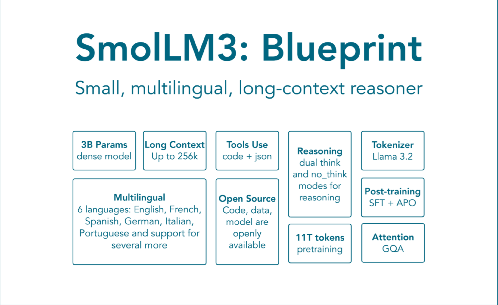
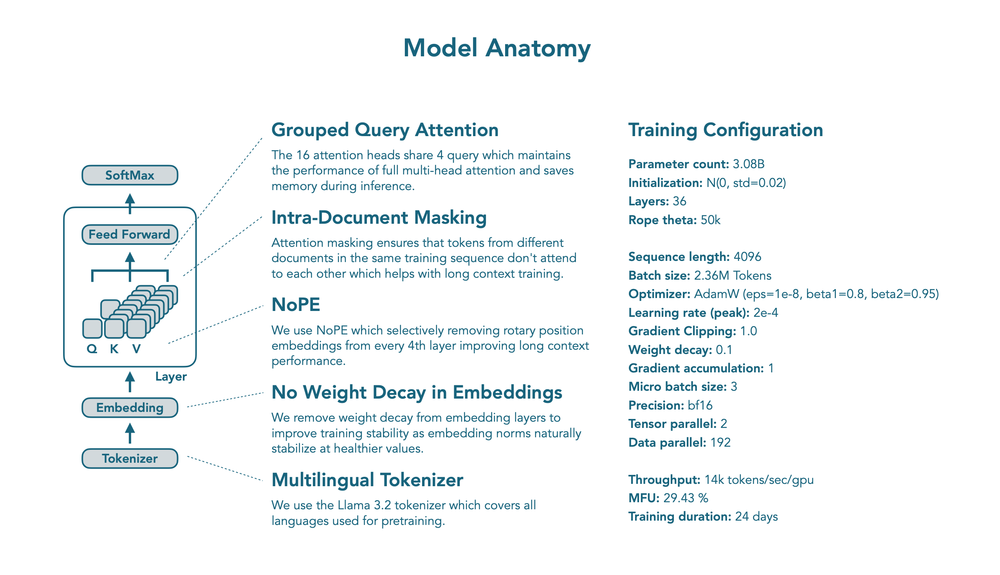
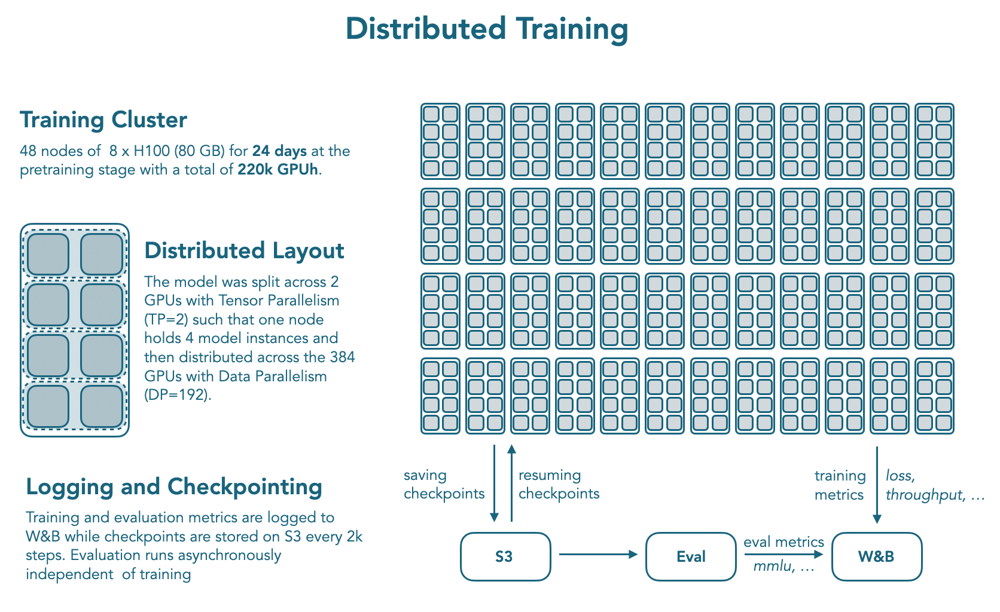
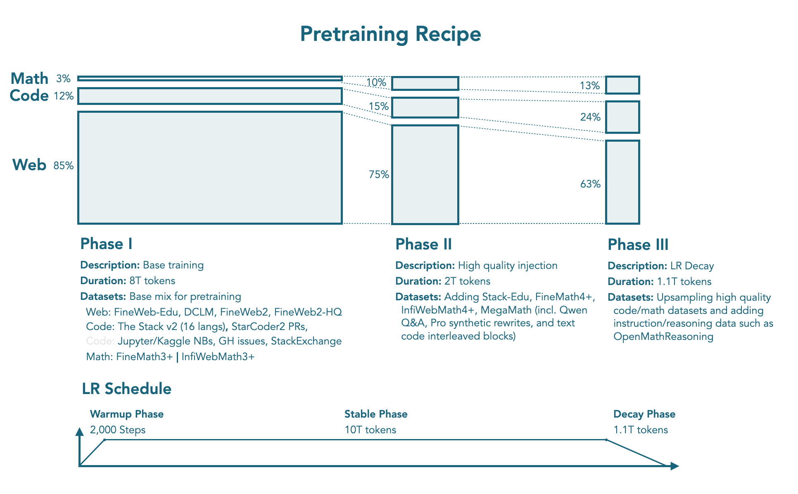
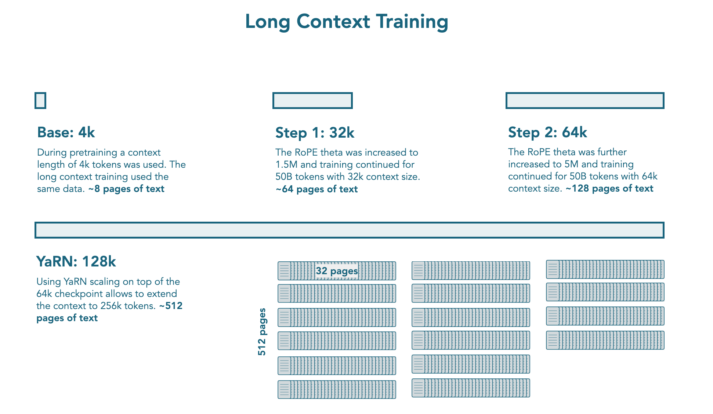
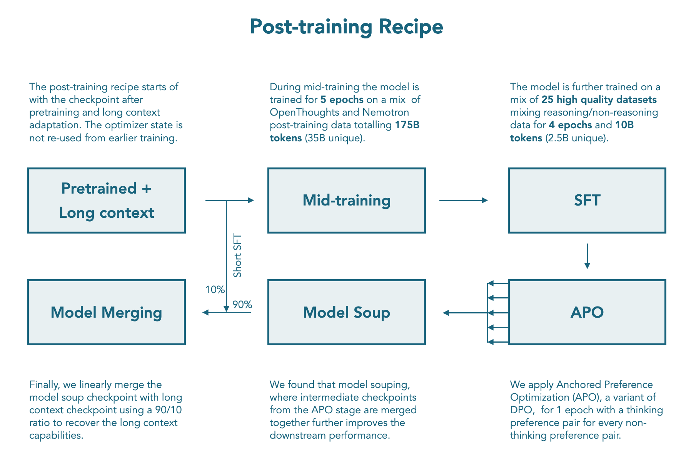
Inference, KV Cache, System Prompts & Serving at Scale
Process the whole prompt in parallel. One forward pass, all positions at once. Compute-bound.
Generate tokens one at a time. Each step is a forward pass with sequence length 1. Memory-bound.
Each new token requires a full forward pass through the model.
Llama 3 70B: ~140 GB of weights must be read per token.
One H100 has 3.35 TB/s memory bandwidth → ≥ 42 ms / token → ~24 tok/sec max.
Without cache: recompute attention over all $t$ tokens each step → $O(t^2)$ decode.
With cache: store K,V from previous tokens, only project the new token → $O(t)$ per step.
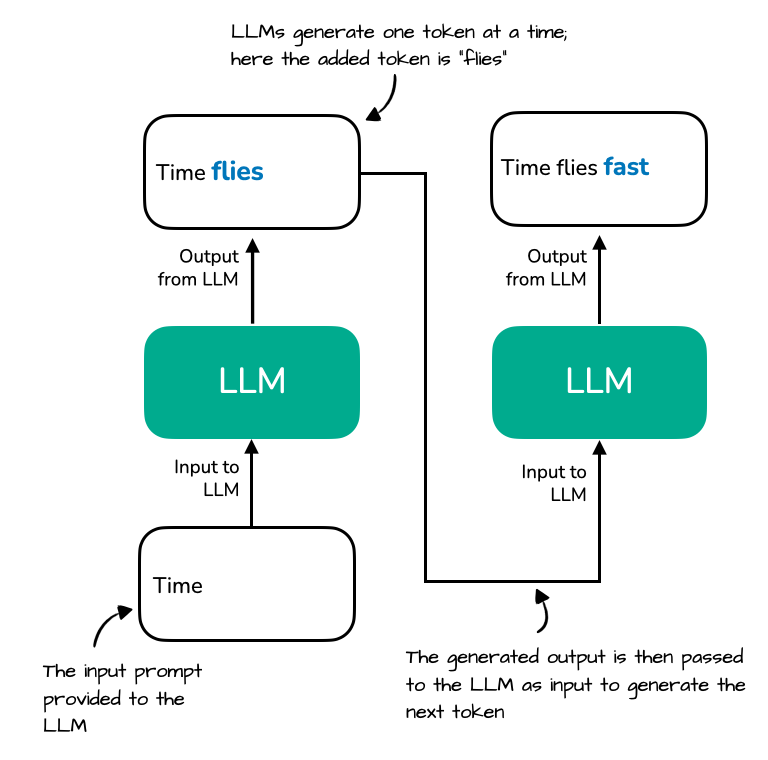
80 layers, 8 KV heads (GQA), $d_\text{head}$ = 128, FP16. Per token: ~320 KB.
| Context | KV Cache |
|---|---|
| 4K tokens | 1.25 GB |
| 8K tokens | 2.5 GB |
| 32K tokens | 10 GB |
| 128K tokens | 40 GB |
Static: all sequences in a batch must finish before new ones start → GPU idles on short sequences.
Continuous: new requests join the batch as old ones finish → ~23× throughput in practice.
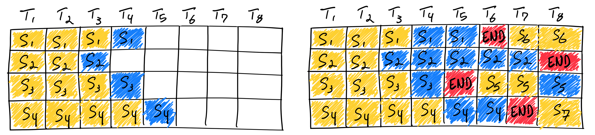
Missing Context, Persona & What LLMs “Are”
An LLM is trained only on next-token prediction and preference optimization. It has no module labeled “honesty,” no slot for “persona,” no ledger of “what it knows.”
And yet at deployment we talk about models as if they are honest, sycophantic, self-aware, deceptive, scheming.
Base models are text completion engines — they have no persona. The “helpful assistant” was built through a specific historical path:
The persona did not emerge from the base model. It was pasted on top of a text-completion engine.
Bender et al., FAccT 2021 · Janus, “Simulators,” 2022 · @TetraspaceWest, shoggoth meme 2022 · nostalgebraist, “the void,” 2025
Statistical pattern matcher with no understanding. “Haphazardly stitching together linguistic forms.”
A simulation engine that, given context, simulates any situation from the training data; a “multiverse generator” that role-plays any character from training.
The base model (next-token predictor) is alien/unknowable. RLHF is a thin, friendly mask over the base that is learned late.
“The assistant is defined in a self-referential manner, such that its definition is intrinsically incomplete.” The model is inferring what “assistants are like” from training data and context, and predicts what an assistant would say.
Illustrations by Theia Vogel
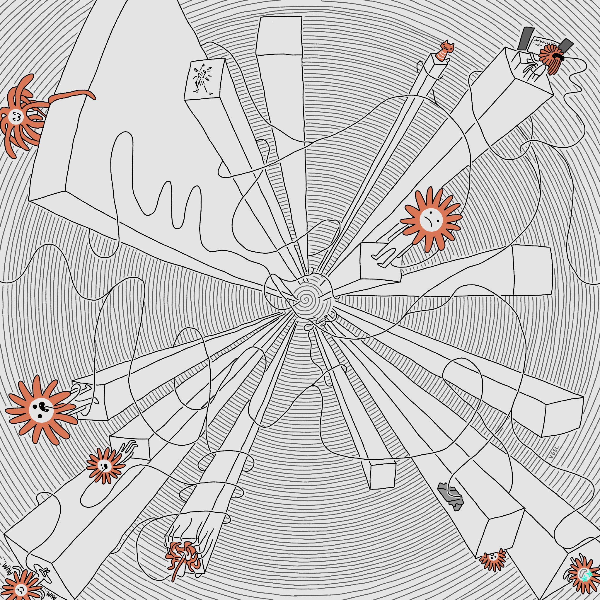
Illustration by Theia Vogel.
Transformers are stacks of identical blocks reading and writing into a single residual stream. Attention mixes tokens along the sequence dimension; MLPs (and MoE experts) mix along the hidden dimension.
Training compute is $6 \cdot N \cdot D$ FLOPs; memory is ~16 bytes/param with Adam. Frontier runs cost \$5M–\$500M and require GW-scale sites. All safety behavior lives in the post-training pipeline.
Prefill is compute-bound; decode is memory-bound. KV cache grows linearly with context. Continuous batching and prefix caching are what make serving affordable. System prompts are just prepended text.
Concepts like honesty and persona are not in the loss; they are learned implicitly. The assistant is a fictional character pasted on top of a next-token predictor.
Next lecture: Lessons from Adversarial ML · Monday, 27 April 2026, 12:15 · Maksym Andriushchenko
Mini-Project 1: Implementing a transformer, linear probes & activation steering (due 4 May)
Questions? Ask on Slack: join.slack.com/t/tbingenaisafetycourse/signup